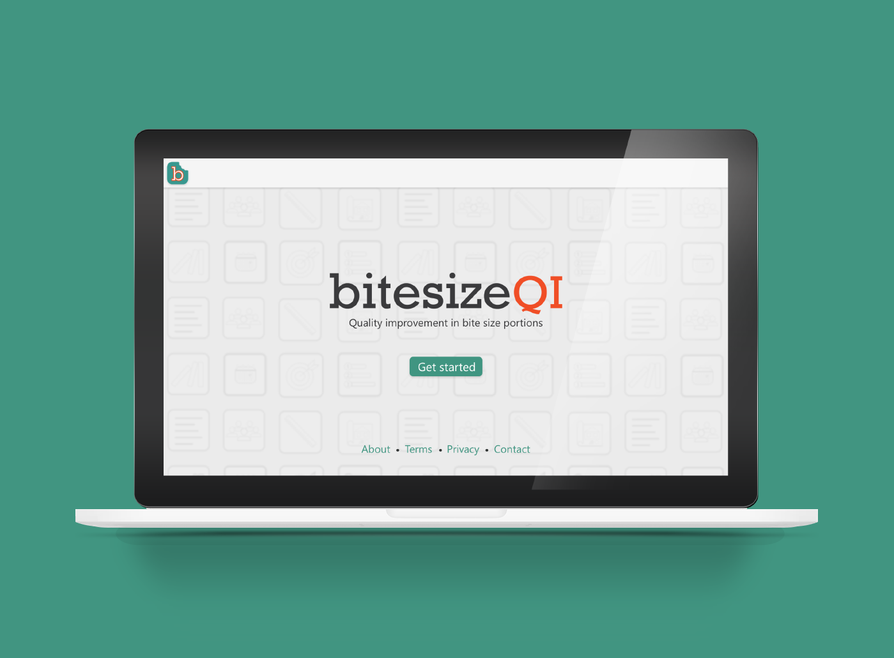

Quality improvement (QI) consists of systematic and continuous actions that lead to measurable improvement and is an integral component to delivering high-quality healthcare. However, QI is challenging, and with mounting day-to-day duties, healthcare workers struggle to find the time to learn proper skills to successfully affect change in their workplace.
Background
BiteSizeQI was created to teach and foster micro-innovation within large organizations, which promotes small and positive changes. The best ideas don’t always come from the top and, when given the right tools, all staff can drive meaningful change. I worked as a UI/UX designer with a team of quality improvement experts, clinicians, programmers and researchers at Duke Cancer Institute to create BiteSize QI.
How it Works
BiteSize QI is a web-based application that helps users identify a problem or deficiency in their workplace, and then walks the user through the fundamentals of quality improvement to help fix the problem. Upon logging in, users will work their way through a series of short, Lean Six Sigma-inspired videos that build their quality improvement skills. Concepts include how to create problem statements, effective timelines, and clear solutions.
After completing a video, the system then engages the user to apply the skills they have learned by completing simple quality improvement activities. As a user completes each activity, the system records the progress made on the dashboard and builds a guide for implementing a solution to the problem using the responses from the activities. We call this guide a Project Blueprint.
BiteSizeQI enables all members of a team to highlight problems in their workplace and propose fixes for them in a structured way consistent with validated quality improvement principles.